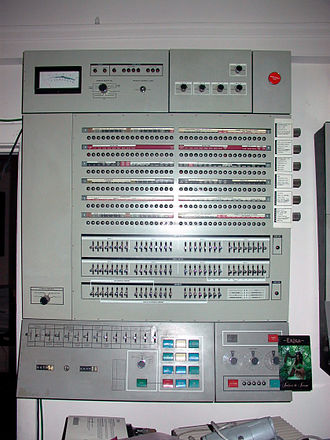

Early computers were built to perform a series of single tasks, like a calculator. Basic operating system features were developed in the 1950s, such as resident monitor functions that could automatically run different programs in succession to speed up processing. Operating systems did not exist in their modern and more complex forms until the early 1960s.[11] Hardware features were added, that enabled use of runtime libraries, interrupts, and parallel processing. When personal computers became popular in the 1980s, operating systems were made for them similar in concept to those used on larger computers.
An improvement was the Atlas Supervisor. Introduced with the Manchester Atlas in 1962, it is considered by many to be the first recognisable modern operating system.[12] Brinch Hansen described it as "the most significant breakthrough in the history of operating systems.